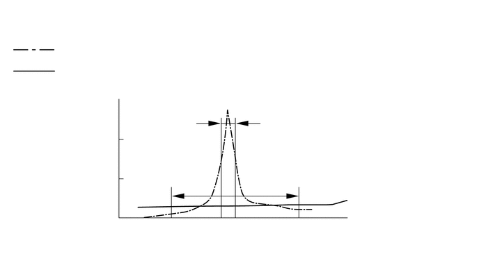
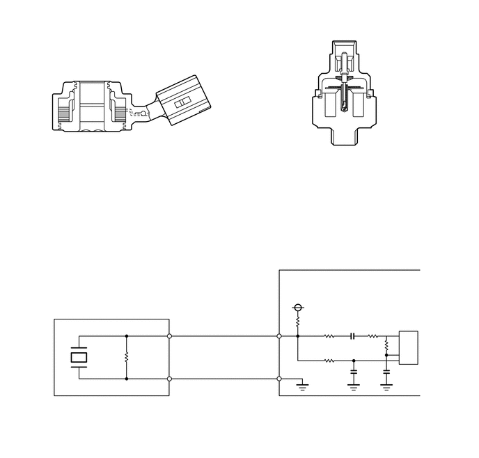

NM3140CG
_51
发动机/混合动力系统
_028879
7ZR-FE 发动机控制系统
_0131985
SFI 系统
DE
详情
F
7ZR-FE 发动机控制系统 SFI 系统 详情 爆震控制传感器
结构
a.
在常规型爆震控制传感器（谐振型）中，振动片内置于传感器。该振动片的谐振点同气缸体分总成爆震*频率的谐振点相同。该传感器只能检测到这一波段内的振动。
*：此处术语“爆震”指燃烧室内混合气的早燃或爆燃。早燃或爆燃指混合气点火时间早于最佳点火时间。这里的“爆震”并非主要指发动机产生的很大的机械噪音。
b.
平面型爆震控制传感器（非谐振型）能够检测到较宽波段（从约 5 kHz 至 15 kHz）内的振动，且具有以下特征。
c.
发动机爆震频率会随发动机转速而产生轻微变化。即使发动机爆震频率发生变化，平面型爆震控制传感器也能检测振动。由于采用了平面型爆震控制传感器，与常规型爆震控制传感器相比，振动检测能力得以提高，点火正时控制也更精确。

3.406,2.938 3.917,2.51
3.917,2.51 4.042,2.51
true
3.406,1.833 3.917,1.396
3.917,1.396 4.052,1.396
true
0.135,0.115 3.833,0.333
3.698,0.219
12
爆震控制传感器的特性：
0.906,0.646 4.698,0.844
3.792,0.198
10
：常规型（谐振）传感器的谐振特性
0.906,0.979 4.698,1.177
3.792,0.198
10
：平面型（非谐振型）传感器的谐振特性
1.573,1.375 1.792,1.625
0.219,0.25
10
(V)
1.094,2.292 1.594,2.49
0.5,0.198
10
电压
3.083,3.365 3.76,3.531
0.677,0.167
10
频率
5.26,3.177 5.573,3.427
0.313,0.25
10
(Hz)
4.104,2.448 5.938,2.635
1.833,0.188
10
平面型传感器的检测波段
4.104,1.323 6.438,1.51
2.333,0.188
10
谐振型传感器的检测波段
d.
通过安装在气缸体分总成上的双头螺栓，将平面型爆震控制传感器安装在发动机上。因此，在传感器中心设有用于安装双头螺栓的孔。
e.
在传感器内，上部有一个钢制配重。在配重和压电元件之间有一块隔振垫。
f.
开路/短路检测电阻器集成于传感器内。点火开关置于 ON 位置时，爆震控制传感器中的开路/短路检测电阻器以及 ECM 中的电阻器使端子 KNK1 的电压保持恒定。ECM 中的集成电路 (IC) 持续监视端子 KNK1 的电压。如果在爆震控制传感器和 ECM 之间出现开路/短路，则端子 KNK1 的电压将发生变化，ECM 将检测到开路/短路并存储诊断故障码 (DTC)。

1.448,0.802 1.25,0.802
1.25,0.802 0.948,1.5
true
1.052,1.656 1.458,2.292
1.458,2.292 1.625,2.292
true
0.938,1.698 1.417,2.708
1.417,2.708 1.635,2.708
true
2.313,3.906 2.052,3.906
2.052,3.906 1.188,5.313
true
1.906,5.271 2.5,4.427
2.5,4.427 2.771,4.427
true
2.156,1.688 2.563,2.135
2.563,2.135 2.771,2.135
true
6.052,0.688 5.865,0.688
5.865,0.688 5.344,1.281
true
6.031,1.833 5.865,1.833
5.865,1.833 5.448,1.323
true
0.865,2.979 3.427,3.333
2.563,0.354
10
平面型（非谐振型）
4.365,2.979 7.146,3.323
2.781,0.344
10
常规型（谐振型）
6.094,1.75 7.135,2.094
1.042,0.344
10
振动片
6.135,0.469 7.083,1.094
0.948,0.625
10
压电元件
1.677,2.625 3.083,2.958
1.406,0.333
10
压电元件
2.354,3.833 3.854,4.125
1.5,0.292
10
压电元件
2.844,2.052 4.052,2.594
1.208,0.542
10
开路检测电阻器
2.802,4.354 4.01,4.917
1.208,0.563
10
开路检测电阻器
1.49,0.719 2.417,1.01
0.927,0.292
10
钢制配重
1.667,2.208 2.302,2.458
0.635,0.25
10
隔振垫
4.219,4.073 4.625,4.229
0.406,0.156
10
ECM
4.365,4.354 4.667,4.542
0.302,0.188
10
5 V
1.979,5.25 2.583,5.479
0.604,0.229
10
200 kΩ
4.531,4.719 5.135,4.948
0.604,0.229
10
200 kΩ
0.677,5.958 2.781,6.26
2.104,0.302
10
平面型爆震控制传感器
6.052,5.115 6.25,5.302
0.198,0.188
10
IC
3.74,5.031 4.167,5.323
0.427,0.292
10
KNK1
3.74,5.677 4.167,5.979
0.427,0.302
10
EKNK
g.
爆震造成的振动传递到钢制配重上。配重的惯性将压力施加到压电元件上。该动作产生电动势。
3.573,1.281 2.896,1.146
2.896,1.146 2.802,1.146
true
3.583,0.948 2.917,0.271
2.917,0.271 2.844,0.271
true
2.635,1.063 2.833,1.292
0.198,0.229
10
false
*b
2.688,0.208 2.885,0.438
0.198,0.229
10
false
*a
| *a | 钢制配重 | *b | 压电元件 |

|
惯性 | - | - |